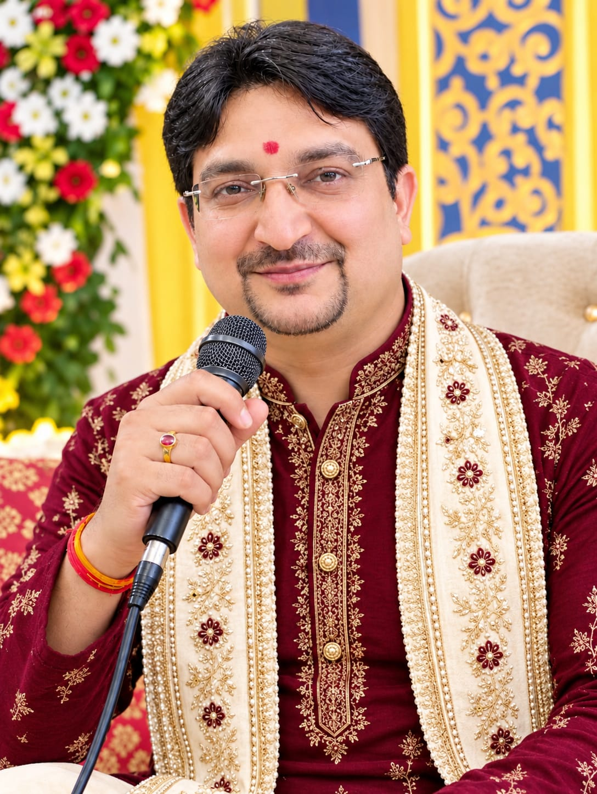
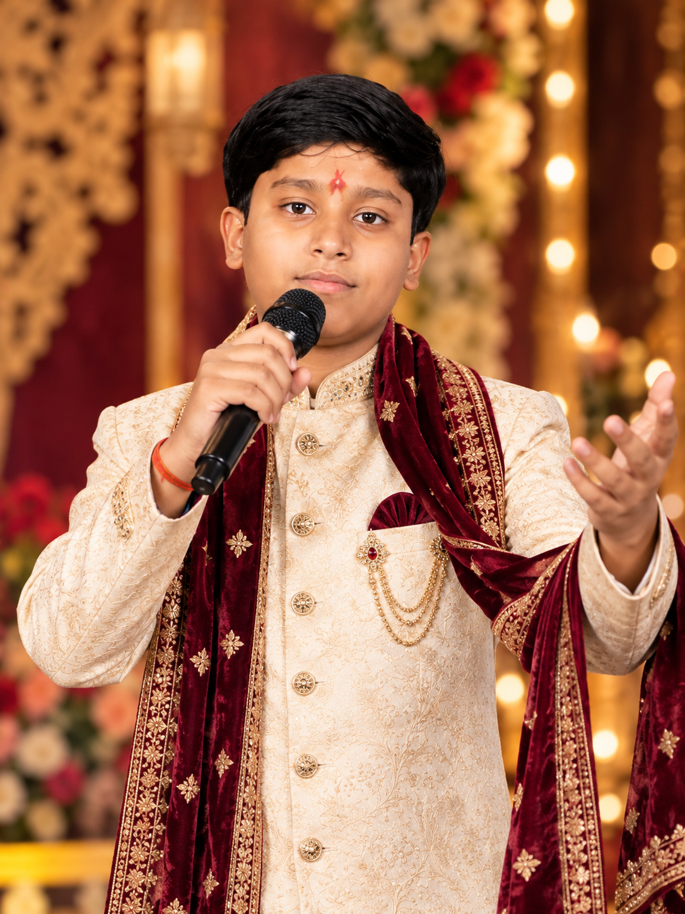
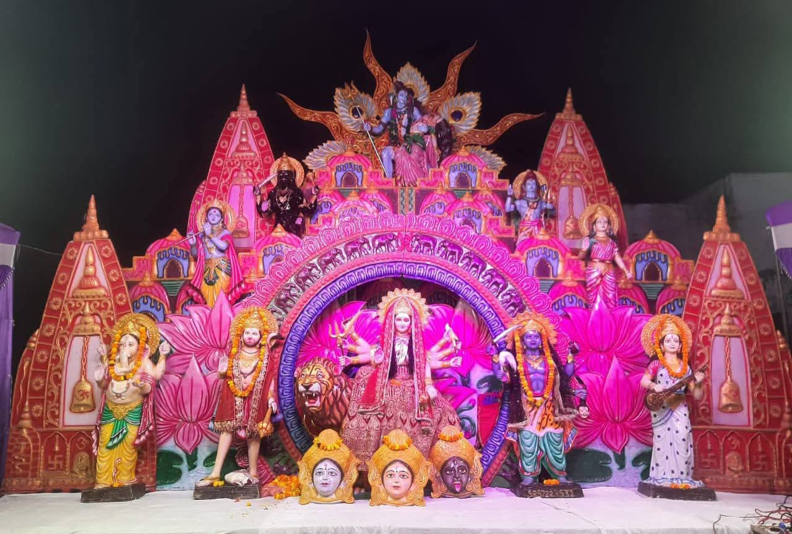
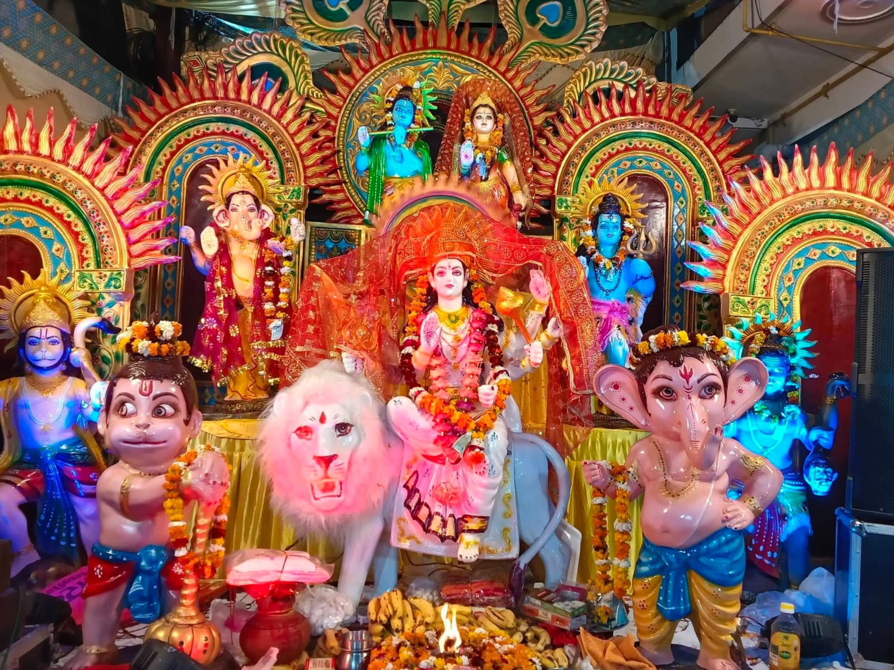
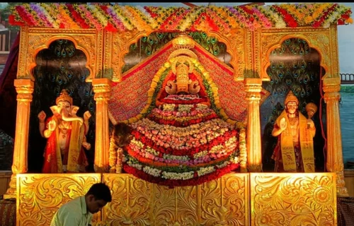
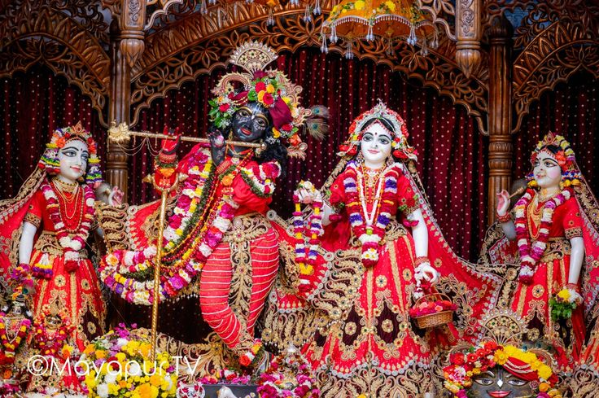
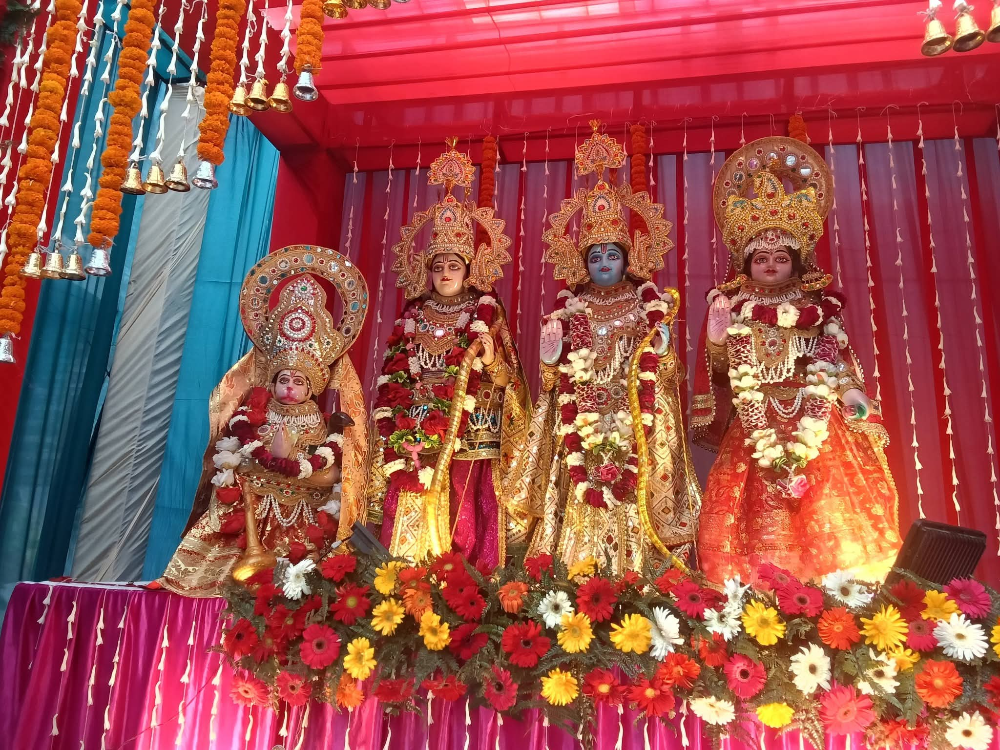
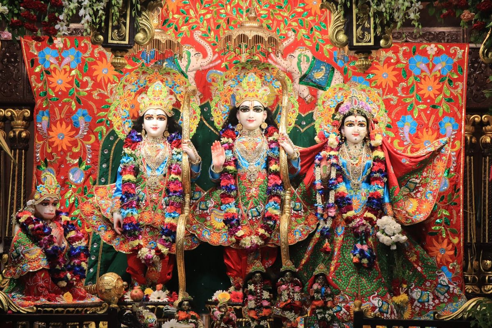
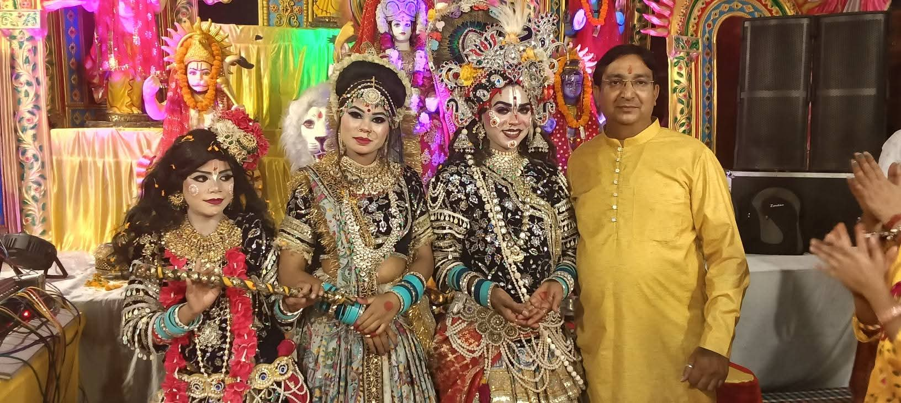

पार्टी संचालक • गायक
उत्तर प्रदेश
राजेश साँवरा (सोनी जी)
भक्ति संगीत के प्रति समर्पित, अपने सुरीले भजनों से भक्तों को प्रभु से जोड़ते हैं।
☎ +91 93585 68077⌖ न्यू मंडी, मुज़फ्फरनगर,उत्तर प्रदेश
भक्ति के सुर, श्रद्धा का संगम।
हर आयोजन में भजन, प्रेम और प्रभु का आशीर्वाद।
श्री जी जागरण पार्टी, मुज़फ्फरनगर में भक्ति संगीत और सामूहिक प्रार्थना की परंपरा को प्रेम से आगे बढ़ाती है। माता के जागरण से लेकर सुंदरकांड पाठ और भव्य झाँकियों तक—हम हर आयोजन को समर्पण और भक्तिभाव से सजाते हैं।
संगीत और सेवा के माध्यम से भक्तों को जोड़ते हुए।

भक्ति संगीत के प्रति समर्पित, अपने सुरीले भजनों से भक्तों को प्रभु से जोड़ते हैं।
☎ +91 93585 68077⌖ न्यू मंडी, मुज़फ्फरनगर,
भक्ति गीतों और मधुर गायन के साथ हर भजन संध्या में भक्तिरस भरते हैं।
☎ +91 82731 03413किसी कार्यक्रम के नाम पर टैप करें और उसकी जानकारी व तस्वीरों तक पहुँचें।

॥ जय माता दी ॥माँ भगवती के भजनों, भेंटों और जयकारों से सजी भक्तिमय रात्रि। परिवार और संगत के साथ माँ का गुणगान करें।
कार्यक्रम की जानकारी लें ↗
माता की चौकीशुभ अवसरों पर माँ का दरबार, भजन और आरती—एक आत्मीय धार्मिक आयोजन, जिसमें पूरा परिवार शामिल हो।
कार्यक्रम की जानकारी लें ↗
जय श्री श्यामबाबा श्याम के भजनों और संकीर्तन के साथ प्रेम, विश्वास और भक्ति से भरी संध्या।
कार्यक्रम की जानकारी लें ↗
राधे कृष्णराधा-कृष्ण के मधुर भजनों के माध्यम से प्रेम और भक्ति का उत्सव।
कार्यक्रम की जानकारी लें ↗
श्री हनुमते नमःसामूहिक सुंदरकांड पाठ और हनुमान भक्ति के साथ मंगलमय आयोजन।
कार्यक्रम की जानकारी लें ↗
श्री रामरामचरितमानस की चौपाइयों और पाठ के साथ प्रभु श्रीराम की महिमा का स्मरण।
कार्यक्रम की जानकारी लें ↗
दिव्य झाँकीधार्मिक प्रसंगों पर आधारित रंगारंग झाँकियाँ, जो आयोजन को बनाती हैं और भी खास।
कार्यक्रम की जानकारी लें ↗तारीख, कार्यक्रम और उपलब्धता के लिए सीधे संपर्क करें।